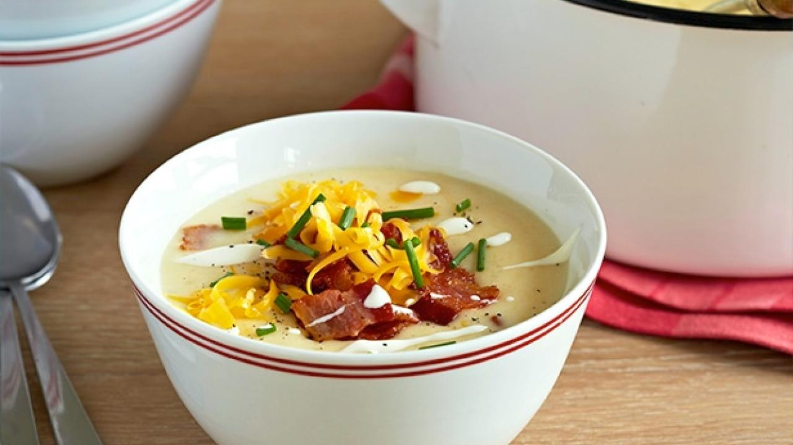

Baked Potato Soup

Description
A recipe from Guy Fieri himself! This delicious soup recipe is sure to
impress all of your friends and may be even Guy!
Ingredients
- 4 large baking potatoes (Idaho or russet)
- 12 slices thick-cut applewood smoked bacon
- 1/2 cup all-purpose flour
- 6 cups 2 percent low-fat milk, heated
- 5 ounces sharp Cheddar, grated
- Kosher salt and freshly ground black pepper
- 4 ounces sour cream
- 3 tablespoons finely chopped fresh chives
Steps
- Preheat the oven to 350 degrees F.
-
Place the potatoes on a roasting tray and bake for 45 minutes. When
done, the tip of a paring knife should go through the potatoes easily.
-
Slice the bacon into lardons (thin strips) and cook in a large,
heavy-bottomed pot over medium heat until crisp. Remove the bacon from
the pot with a slotted spoon and set aside, leaving the drippings in the
pot.
-
Add the flour to the drippings in the pot and stir to combine. Cook,
without adding color, until the flour and fat has combined, about 1
minute. Pour in the milk while you whisk to incorporate. Cook over
medium heat until bubbly and thickened, stirring frequently, about 15
minutes.
-
Scoop out the potato pulp from the skins and add to the milk mixture.
Mash with the back of a wooden spoon leaving it a little bit chunky.
-
Add the cooked bacon (leaving a little out for garnishing the soup), 1
cup of the cheese, and season well with salt and pepper. Stir until the
cheese has melted. Remove from the heat.
-
Ladle the soup into bowls, drizzle with sour cream (from a squeeze
bottle), sprinkle with remaining bacon bits, grated cheese and chives.
Back